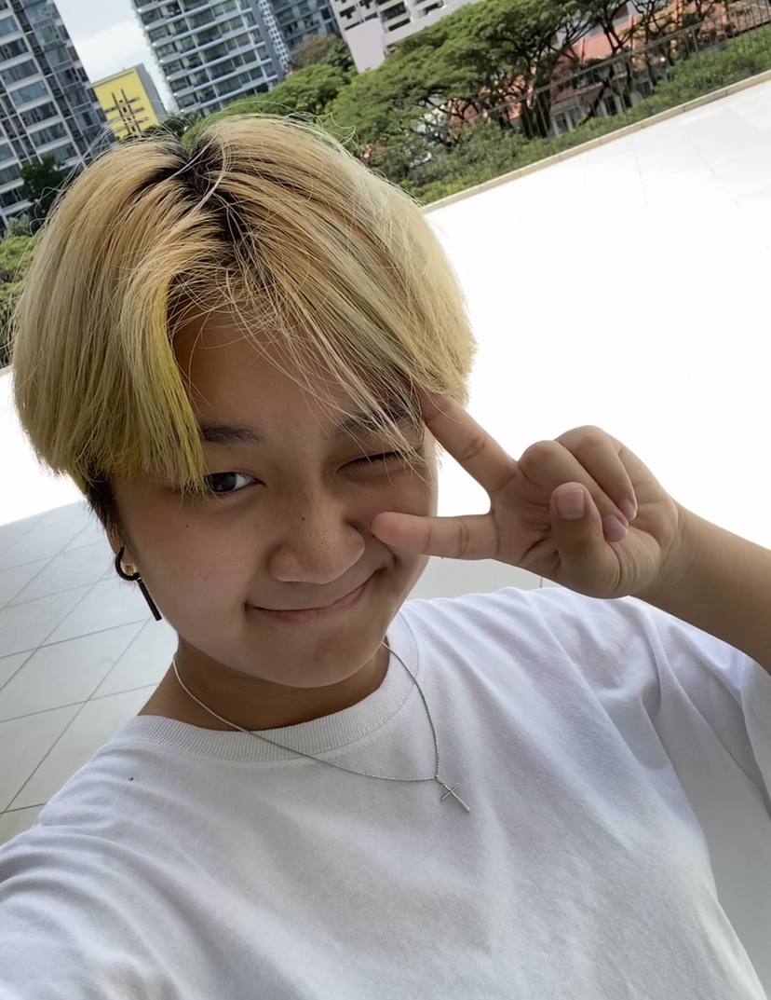

About Me
Audrey O.
Lives near: Bukit Batok
Course: Diploma in Media and Communications
|  | I am a Media and Communications student in MAD. I have a strong passion in video, design, marketing, art and much more! I was interested in experimenting and trying something hands on, thus I chose this module to take as an elective. |